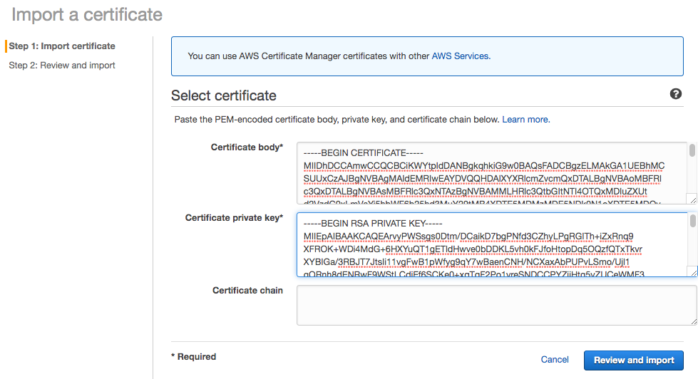
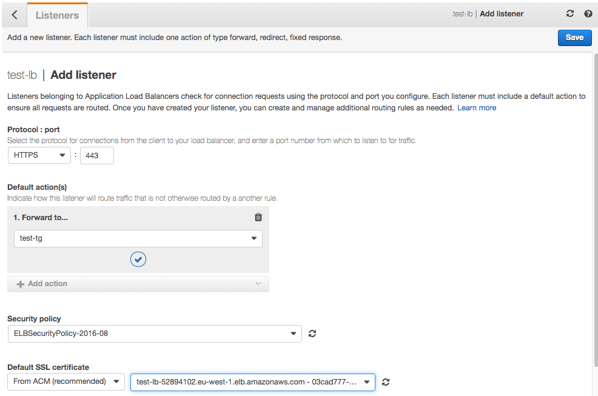
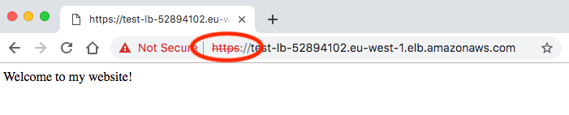

Configure load balancer to accept HTTPS traffic.
In this step we will create a self-signed certificate to attach to an elastic load balancer in AWS.
Using a self-signed certificate will allow us to secure traffic between browser and load balancer, but the browser will provide a warning that the certificate is untrusted as there is potential for a meet-in-the-middle attack. Resolving this is beyond the scope of this module -- it requires you to register a domain name and prove domain ownership to a trusted root CA such as Let's Encrypt.
Firstly, create the load balancer in AWS and have it accept HTTP traffic only for now.
In Step 3, specify a security group that accepts HTTPS traffic (port 443) as well as HTTP (port 80) from anywhere.
When you are finished, note the DNS name assigned to the load balancer.
As we did in the TLS lab in the EWD module a few weeks ago, we create a 2048-bit RSA private key for the CA
openssl genrsa -out webserver.key 2048Now use this to create a certificate signing request for the web server, but this time enter your load balancer's DNS name when asked for the Common Name (FQDN); e.g.
openssl req -new -key webserver.key -out webserver.csrNext, create a new self-signed certificate based on this new CSR file:
openssl x509 -req -signkey webserver.key -sha256 -in webserver.csr -out webserver_self.crtIn the AWS Web Management Console, select Services and Certificate Manager (in the Security category).
Click Get Started under Provision Certificates
Next choose Import a Certificate.
Paste in your Certificate body (webserver_self.crt) and Certificate private Key (webserver.key). You can leave the Certificate chain blank. 
Now Review and Import and confirm on the next page.
Go back to EC2, select Load Balancers and your recently-created load balancer.
Click on the Listeners tab and Add Listener
Choose HTTPS (port 443).
Under Default action(s), add an Action to Forward to your target group
Leave the Security policy setting unchanged
For Default SSL certificate, select your newly-created certificate from AWS Certificate Manager (ACM)
Click Save
You should now be able to browse to https://your-loadbalancer-dns-name/ (You will get a browser warning as the certificate is self-signed.)
You may wish to inspect the certificate presented by the load balancer.

